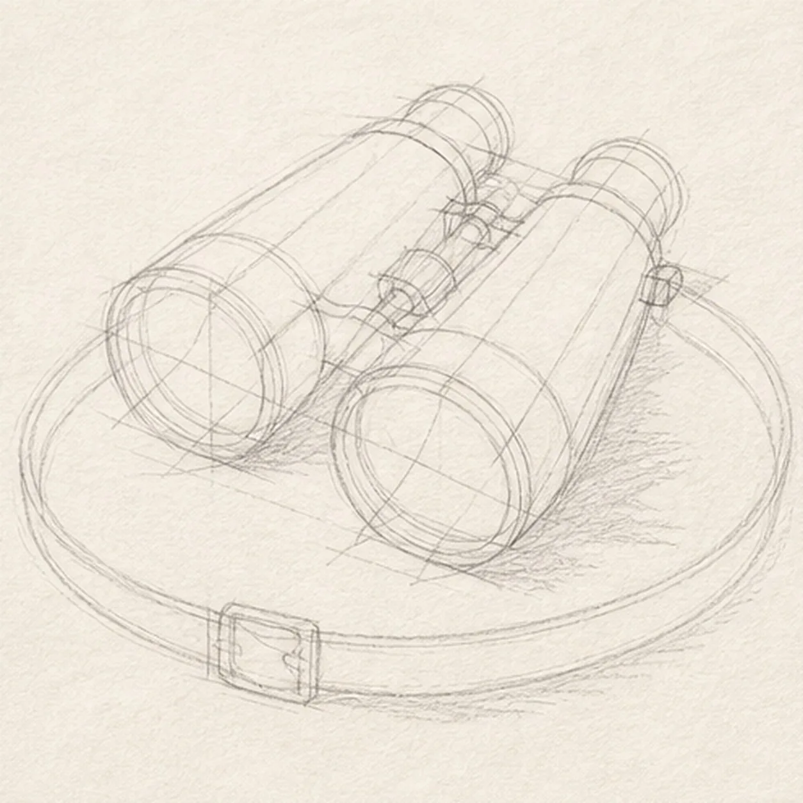
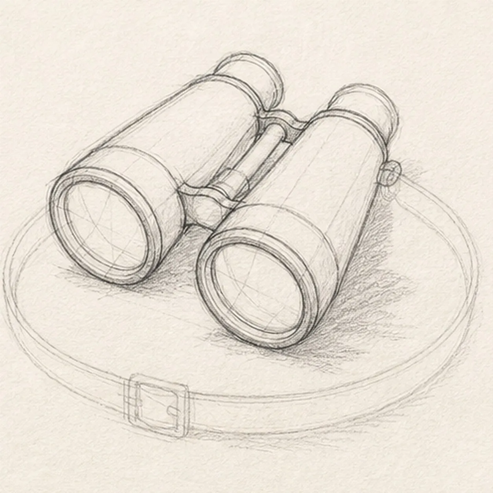
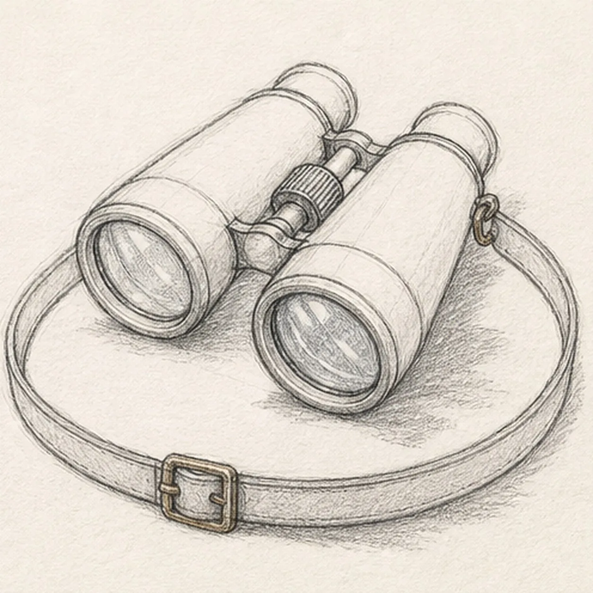
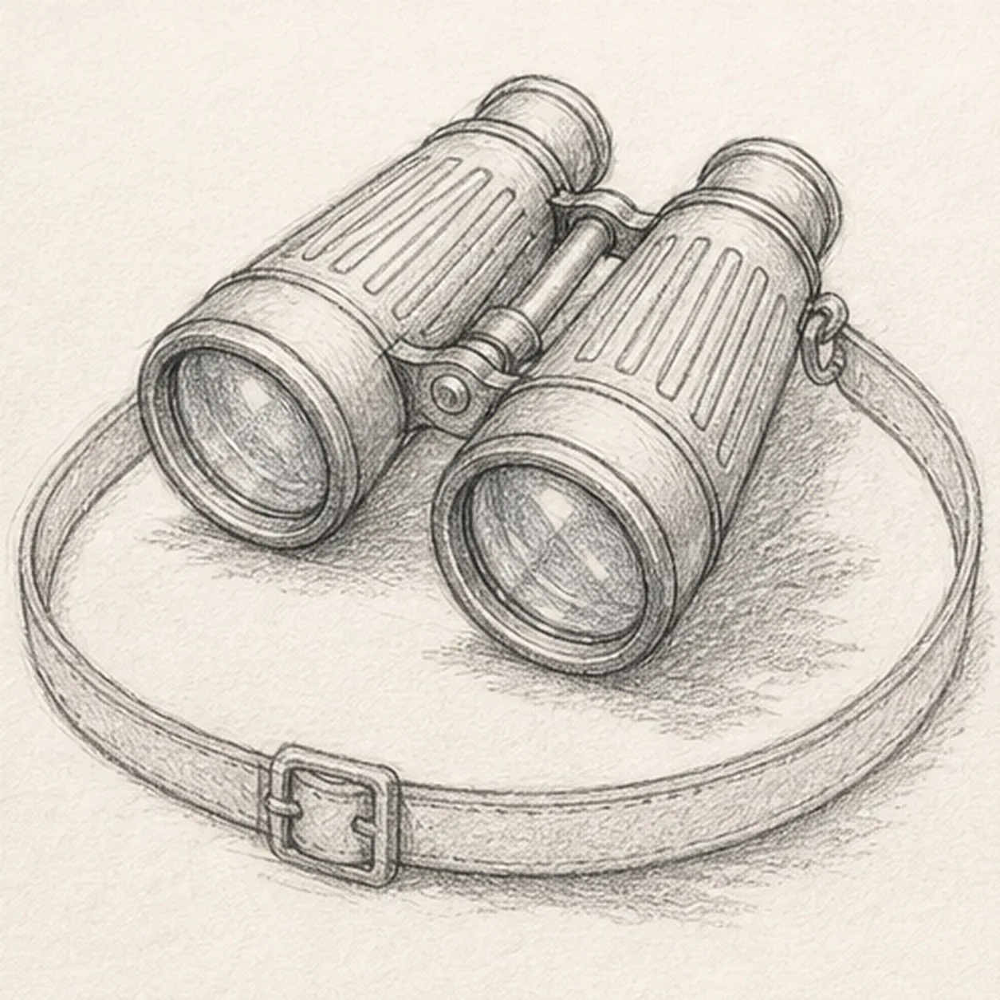
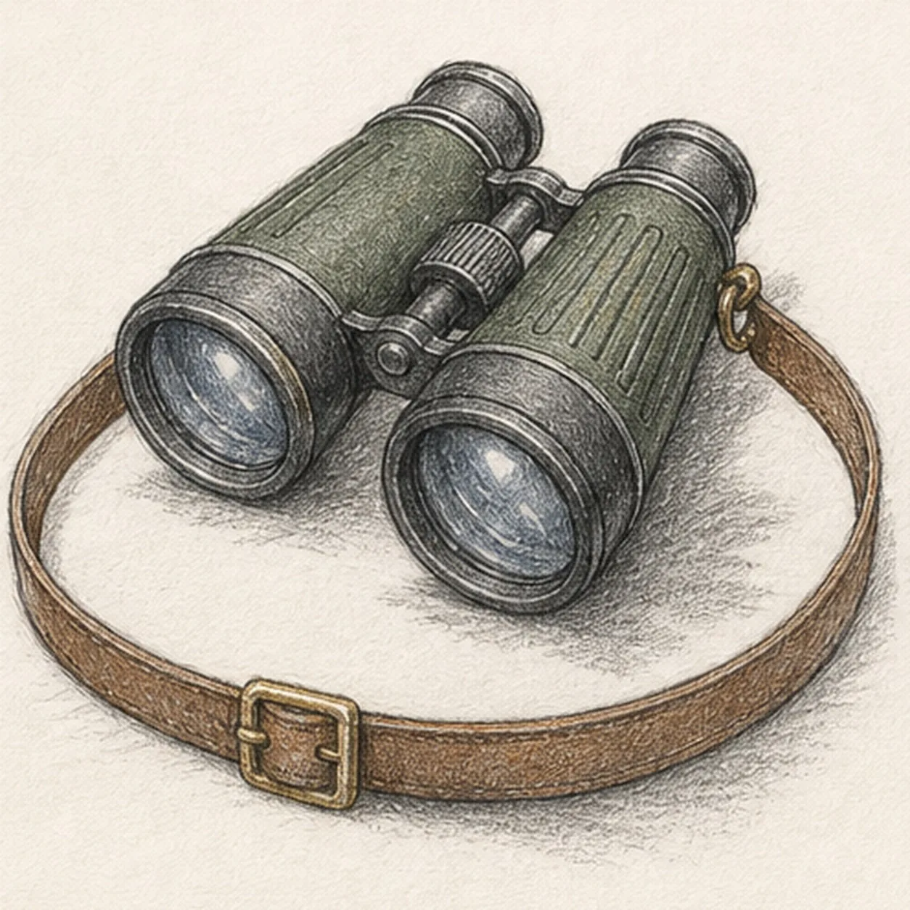

From the archive
Let's draw vintage binoculars with a leather strap
Treat this as one small practice round: build the subject lightly, notice the shapes, then darken only the lines that help the finished sketch.
-
01

Map the paired barrels
Use pale graphite to place two barrel axes and tapered boxes, two large objective ellipses, two smaller eyepiece ellipses, the central bridge, focus wheel, one broad strap loop, two attachment points, one buckle, and a broken shadow footprint.
Sketch tip: Ghost each paired ellipse before touching down and compare its tilt with the matching lens on the other barrel. Reserve the strap behind the binoculars now, so its long loop stops cleanly at the barrels and bridge without asking you to erase keeper lines later.
-
02

Shape the optical body
Wrap the guides with exactly two tapered barrels, two objective rims, two smaller eyepieces, and one central hinge bridge while preserving every strap and hardware route.
Sketch tip: Draw the nearer barrel first, then use its long edges to aim the farther barrel. Compare the wedge of paper between them and keep the far objective rim slightly narrower so the three-quarter view reads without a ruler.
-
03

Connect the glass and strap
Clarify one ridged focus wheel, two objective glass planes, two strap attachment points including one visible side ring and one tucked connection, exactly one buckle, and one continuous leather loop on their reserved guides.
Sketch tip: Trace the strap with your finger from one attachment, through the buckle, and around to the other before darkening it. Let the strap disappear only behind the barrel shapes you reserved, and keep both glass highlights inside their established rims.
-
04

Build the field textures
Add simple grip ribs to both barrels, rim seams, hinge hardware, sparse leather grain, glass highlights, and the established broken tabletop shadow without changing the optics or strap route.
Sketch tip: Pull the grip ribs along each barrel's taper and leave small irregular gaps so they feel drawn rather than stamped. Curve the leather grain around the broad loop, and keep the brightest lens highlights as untouched paper.
-
05

Layer the expedition color
Glaze forest green and charcoal over the established barrels, brass over the small hardware, blue gray into both lenses, and warm brown over the continuous leather strap while preserving graphite texture and open paper highlights.
Sketch tip: Build color with two light passes in the direction of each form. Keep the barrel crowns, glass streaks, buckle edges, and strap rim lighter so the dark materials stay separated at thumbnail size.
-
06
![Handmade graphite and restrained colored-pencil sketch of one pair of vintage binoculars in a three-quarter view with exactly two forest-green tapered barrels, exactly two large blue-gray objective lenses, exactly two charcoal eyepieces, one central hinge, one ridged focus wheel, simple grip ribs, small brass hardware, one continuous warm-brown leather strap forming a broad loop beneath the binoculars, exactly one brass buckle, one visible brass side ring, open paper highlights, and one broken graphite tabletop shadow](../assets/vintage-binoculars-with-strap-finished-v1.webp)
Bring the binoculars into focus
Strengthen selected keeper contours, deepen the existing grip, glass, leather, and shadow values, balance the established colors, clarify small highlights, and soften only pale guides that distract.
Sketch tip: Count two barrels, two objective lenses, two eyepieces, one bridge, one focus wheel, one continuous strap, and one buckle before stopping. Change the body or strap colors if you like, but preserve the paired perspective and the same readable loop.